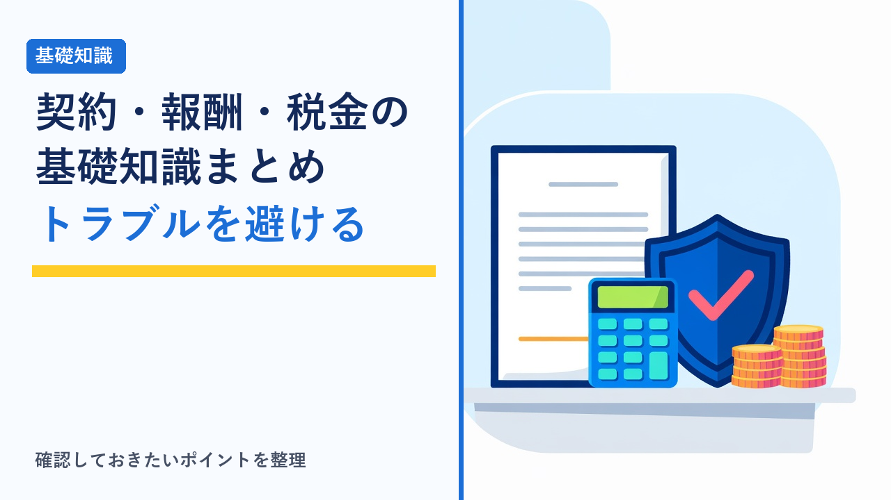
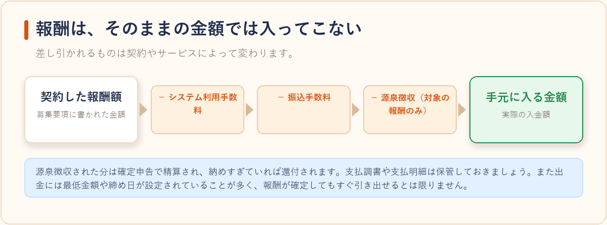
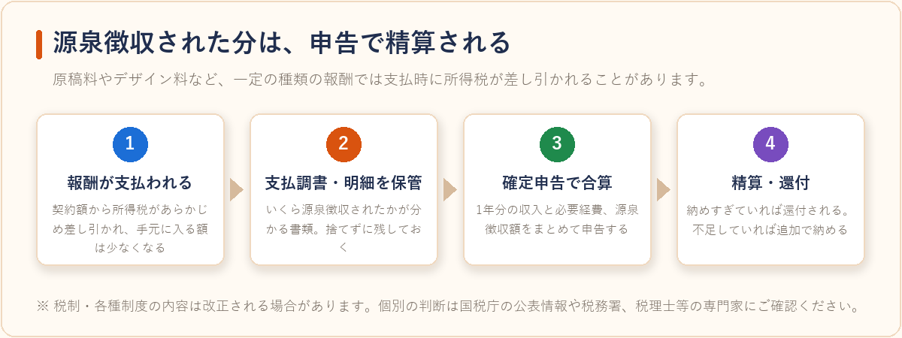
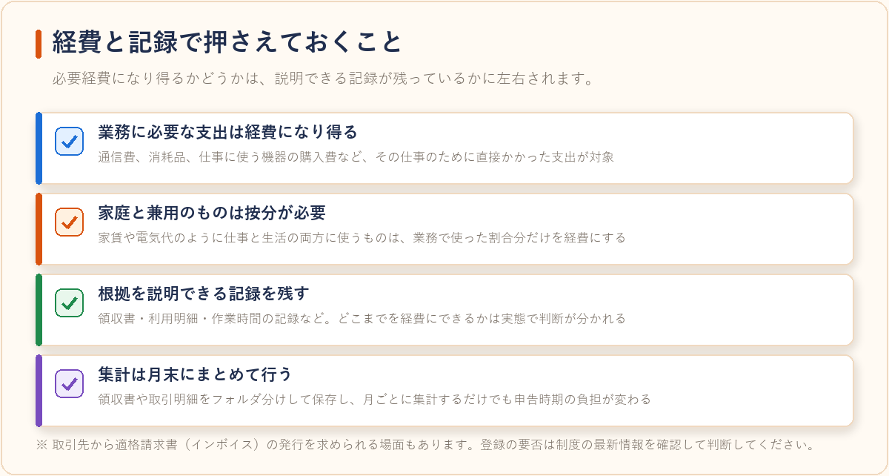

在宅ワークで注意したいこと：契約・報酬・確定申告の基礎知識まとめ
2026-08-03 更新

クラウドソーシングサイトなどを通じて在宅で仕事を受けると、多くの場合その働き方は雇用契約ではなく「業務委託」になります。会社に勤めている場合と違い、契約内容の確認も、報酬の管理も、税金の手続きも自分で行うことになるのが大きな違いです。ここでは、始める前に知っておくと後で困りにくい基礎知識を、契約・報酬・税金の3つに分けて整理しました。
雇用と業務委託はどう違うのか
雇用契約では、労働時間や勤務場所について会社の指示を受ける代わりに、労働基準法や最低賃金、労災保険といった保護が適用されます。一方の業務委託は、成果物や業務の完成に対して報酬が支払われる契約で、原則としてこれらの労働法上の保護は適用されません。「時給いくら」という感覚のまま作業時間だけが増えていくと、実質的な単価が下がってしまうことがあります。作業にかかる時間を見積もり、報酬額と照らして判断する習慣を持っておくと安全です。
雇用契約
- 労働時間や勤務場所について会社の指示を受ける
- 労働基準法・最低賃金・労災保険などの保護が適用される
- 報酬は働いた時間に対して支払われるのが基本
業務委託
- 働き方は自分で決められるのが原則
- 労働法上の保護は原則として適用されない
- 報酬は成果物や業務の完成に対して支払われる
なお、フリーランスとして業務委託で働く人の取引環境を整えるため、発注者に対して取引条件の書面等での明示や期日内の報酬支払いを求めるルールも整備が進んでいます。条件が口頭のままで進みそうなときは、書面やメッセージ上のやり取りとして残してもらうよう依頼するのが基本です。
契約前に確認しておきたい項目
案件に応募する段階、遅くとも作業を始める前に、次の項目がはっきりしているかを確認しておくとトラブルを避けやすくなります。
| 確認項目 | 見るポイント |
|---|---|
| 業務の範囲 | どこまでが依頼内容か。リサーチや画像用意が含まれるかも確認する |
| 報酬額と計算方法 | 固定額か文字単価か。消費税・源泉徴収の扱いが込みか別かを確認する |
| 納期と検収期間 | 納品後どのくらいで検収されるか。報酬確定のタイミングに直結する |
| 修正対応の回数 | 無償修正の範囲。回数無制限だと実質単価が下がりやすい |
| 権利の扱い | 著作権の譲渡有無、実績として公開してよいかどうか |
| 支払い方法・支払日 | サイトの仮払い（エスクロー）を使うか、直接振込か |
特に、クラウドソーシングサイトを介した取引では、作業前にクライアントが報酬をサイトへ預ける仮払いの仕組みが用意されていることがあります。仮払いが済む前に作業を始めると、未払いのリスクを自分で抱えることになります。また、サイト外での直接取引に誘導されるケースは、サイトの保証や規約の外に出ることになるため慎重な判断が必要です。
報酬の受け取りで押さえておくこと
報酬からは、サービスのシステム利用手数料や振込手数料が差し引かれるのが一般的です。加えて、原稿料やデザイン料など一定の種類の報酬では、支払時に所得税が源泉徴収されることがあります。この場合、手元に入る金額は契約額より少なくなりますが、源泉徴収された分は確定申告で精算され、納めすぎていれば還付されます。支払調書や支払明細は保管しておきましょう。

出金には最低金額や締め日が設定されていることが多いため、報酬が確定してもすぐに引き出せるとは限りません。生活費として当てにする場合は、入金のタイミングまで含めて確認しておくと計画が立てやすくなります。

確定申告・住民税申告の基礎
在宅ワークで得た報酬は、原則として所得税・住民税の課税対象です。目安としてよく挙げられるのは次の考え方ですが、収入の種類や他の所得の有無で結論が変わるため、最終的には国税庁の情報や税務署・自治体の窓口で確認してください。
- 会社員などが副業として行う場合：給与以外の所得（収入から必要経費を引いた額）が年20万円を超えると、所得税の確定申告が必要になるのが一般的です
- 20万円以下の場合：所得税の申告が不要でも、住民税の申告は別途必要になることがあります。お住まいの自治体の案内を確認してください
- 専業・扶養内で行う場合：所得額によって扶養の判定や国民健康保険料に影響することがあります
申告の有無にかかわらず、収入と経費の記録は最初から残しておくのが安全です。通信費や消耗品、仕事に使う機器の購入費など、業務に必要な支出は必要経費になり得ますが、家庭と兼用のものは使用割合に応じた按分が必要になります。領収書や取引明細をフォルダ分けして保存し、月末にまとめて集計するだけでも、申告時期の負担は大きく変わります。
また、取引先から適格請求書（インボイス）の発行を求められる場面もあります。登録するかどうかは取引先の状況や自分の売上規模によって判断が変わるため、こちらも制度の最新情報を確認したうえで決めるのが確実です。

始めるときの現実的な進め方
最初から大きな案件を狙うより、小さい案件で契約から納品・入金までを一度通しで経験しておくと、確認すべき項目が具体的に分かるようになります。並行して、報酬の記録用シートを1つ作り、案件名・契約額・源泉徴収の有無・入金日を書き込むようにしておけば、申告時期にそのまま使えます。仕事を探す場所としては、仮払いなど取引の仕組みが整ったクラウドソーシングサイトから始めるのが、初期のリスクを抑えやすい選択肢といえます。
注意：税制・各種制度の内容は改正される場合があります。本記事は一般的な考え方の整理であり、個別の判断については国税庁の公表情報、税務署、税理士等の専門家にご確認ください。
よくある質問
副業で数千円程度の収入でも申告は必要ですか？
金額が小さくても、給与以外の所得（収入から必要経費を引いた額）が年20万円を超えていれば所得税の確定申告が一般的に必要とされます。20万円以下でも住民税の申告が必要になる場合があるため、少額だからといって一律に「不要」と判断せず、お住まいの自治体の案内も確認しておくと安心です。
経費として認められるものの目安はありますか？
仕事に直接必要な支出（通信費、業務用ソフトの利用料、消耗品費など）は必要経費になり得ます。自宅で仕事をする場合の家賃や光熱費のように仕事とプライベートで共用しているものは、使用時間や面積の割合に応じて按分して計上するのが一般的な考え方です。判断に迷う場合は税務署や税理士に確認するのが確実です。
初めて在宅ワークを始める場合、まず何から手を付ければいいですか？
案件を探す前に、業務委託の基本的な仕組みと、確認すべき契約項目（本記事の「契約前に確認しておきたい項目」）を把握しておくと、初めての案件でも落ち着いて条件を確認できます。実際の始め方の手順はクラウディアの始め方：登録から案件応募までの流れでも具体的に紹介しています。
すでに実務経験があり、より単価の高い継続案件を探したい場合は、フリーランス向けのエージェントサービスを併用する方法もあります。